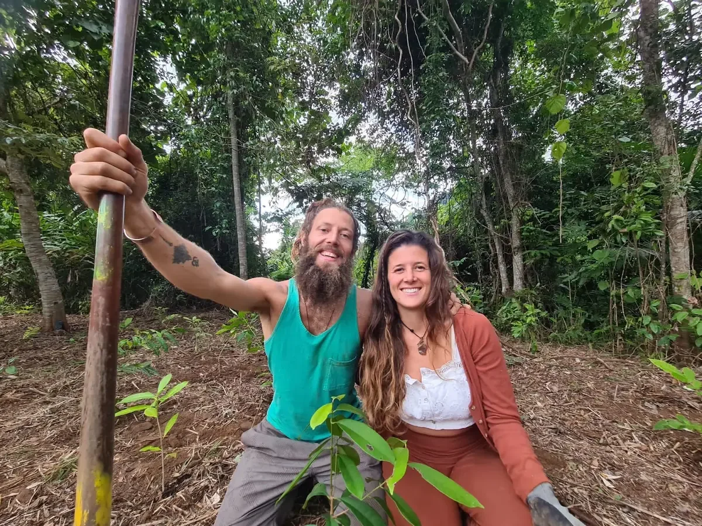

Our regenerative declaration, manifesto & mission
Regenerate Together
Restoring landscapes. Reconnecting people. Growing a regenerative future.
The Great Regeneration · The Great Love Evolution
What if we remembered that we were never separate from nature? That we are participants in an extraordinary web of relationships, capable of becoming a regenerative presence on Earth?
The New Earth is not something we simply wait for. It is something we participate in creating, here and now.

Remember the living waters
Listen to the rivers.
Watch how water dances around stones, gathers in quiet pools, nourishes roots and finds its way toward the ocean. Water flows through our bodies too. Our blood travels through a living network of vessels, carrying nourishment and sustaining life.
Our bodies and the Earth are different, yet both remind us that life depends on flow, relationship, exchange and renewal.
Rivers are not simply resources. They are living ecosystems, connecting mountains, forests, soils, wildlife, communities and oceans. We want to protect springs, streams and watersheds by restoring living soil, appropriate vegetation, biodiversity and the relationships that support them.
Protect the waters. Restore the living Earth.
Ancient wisdom · new knowledge · living relationships
A rainbow of wisdom and care.
Across the Earth, Indigenous peoples carry distinct traditions of observing, listening to and caring for ancestral territories. The Kogi of Colombia speak of Aluna and responsibility to the living world. Hawaiian teachings of aloha ʻāina honour love and care for the land. Traditional custodians across Australia and elsewhere maintain generations of ecological knowledge and relationships. Traditional Aboriginal Australian Rainbow Serpent stories also relate watercourses and the shaping of particular lands, with meanings that vary between peoples. These are distinct traditions, not one universal creation story.
We honour these living knowledge systems, their knowledge holders, their rights and their boundaries. We learn from what people freely choose to share, without claiming their teachings as our own.
Alongside these ancient roots, regenerative farmers, permaculture practitioners, syntropic agroforesters, scientists, educators, water protectors and community builders are learning through the land. Different cultures, methods and ways of knowing need not be made identical to inspire responsible action.
Look around you. Learn from the neighbour who knows the birds, the elder who remembers the springs, the farmer who reads the winds and the child who notices the smallest insects. Listening becomes meaningful when it changes how we act.
From understanding to embodiment
Let our values grow roots.
Oneness. Interbeing. Syntropy. Consciousness. Regeneration. Unity. These can be meaningful worldviews, guiding ideas and living ecological practices, but we don't want them to remain beautiful words.
We want to live them through Earth Care, People Care and Fair Share. Through protecting rivers, restoring ecosystems, growing food forests, supporting livelihoods that serve life, caring for animals and one another, speaking up when something is wrong and changing habits even when it feels uncomfortable.
We don't need perfect humans. We need courageous, compassionate people willing to participate: guardians and regenerators of life, with open hearts, muddy hands and curious minds.
Portugal · our regenerative chapter
Grateful for the roots we're growing here.
After more than a decade learning through farms, communities, land projects and restoration work across Asia, Australia, Colombia and beyond, we've now spent over two years in beautiful Portugal.
We are grateful for the people and landscapes that have welcomed us, and inspired by the restoration projects, regenerative farms, educators, entrepreneurs and community initiatives we keep discovering.
We see possibilities for collaboration, European ecological funding, ethical enterprise and meaningful work that can bring landowners, practitioners, scientists, artists, businesses and local communities together for positive impact.
We hope to collaborate with aligned people and initiatives, including Regen Waves and other restoration networks. These are invitations to connect, not claims of existing partnerships.
Our mission · regenerate together
Regenerate landscapes. Reconnect people.
We dream of helping restore large landscapes, degraded forests, watersheds, rivers, soils and ecosystems. We want to create thriving food forests, syntropic agroforestry systems and regenerative farms where they are ecologically appropriate, while protecting and reconnecting native habitats.
We envision practical restoration projects, living learning landscapes, workshops, paid opportunities for practitioners and local people, collaborative networks and regenerative gatherings and festivals that unite ecological work with education, creativity, music and celebration.
We want to make regenerative knowledge accessible, measurable where possible and actionable: observe the land, protect what is already alive, regenerate thoughtfully, return to see what changed and share what works.
The more we participate in regenerating life, the more alive we become ourselves.
We have felt it after planting trees, restoring orchards, learning from roots, soil microorganisms and flowing water, and creating something meaningful with others. We want more people to experience that sense of belonging and contribution.
The Great Regeneration · the Great Love Evolution
Let care become action.
We believe this is a time of extraordinary possibility: a great regeneration of our landscapes, communities, relationships, economies and ways of living. A Great Love Evolution, where care is expressed through how we grow, build, share, speak up and protect.
We imagine businesses helping restore ecosystems, communities becoming places of belonging, Indigenous knowledge keepers being respected, livelihoods supporting life, and restoration becoming a cultural priority.
The New Earth is a vision we participate in growing, not a finished place or a promise. One restored stream. One living soil. One food forest. One courageous act of care. One community joining another.
A living invitation
Start where you are.
Go outside. Listen. Learn your landscape. Protect an old tree or spring. Observe birds and the flow of water. Care for living soil. Grow food. Support a regenerative farmer. Meet the people who know the land. Share a skill. Teach a child. Join a restoration project. Gather your community. Stand up for life.
We are grateful for those who walked these paths before us, excited for those we have yet to meet, and ready to put our hearts, hands and knowledge into helping make regeneration the highest standard of how we live, grow, build and care for one another.
We are not separate from the living Earth. We belong to her.
Bring Back Eden. Start with water. Build soil. Grow abundance.
Continue the journey
Learn · Connect · Grow · Stand Up for Life · Take Action
Our Living Library gathers films, Indigenous-led voices and allies, regenerative teachers, restoration projects, communities and global movements sharing pathways toward a healthier Earth. Explore their original work, learn practical techniques and find a next step you can actually take.
Watch a film. Learn something new. Meet your neighbours. Join a project. Protect a place.
Welcome to Awakening Eden. Let's regenerate together. 🌍🌱